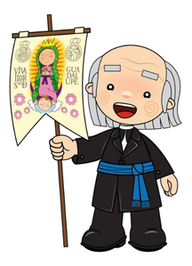
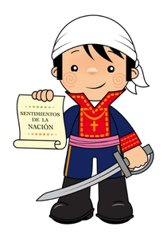
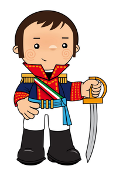
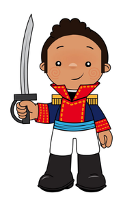
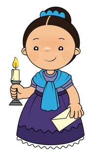

Sacerdote que inició la lucha por la independencia con el Grito de Dolores en 1810.
Sacerdote y militar, organizó la segunda etapa de la lucha y redactó los "Sentimientos de la nación"
Militar clave que consumó la Independencia de México al pactar con los insurgentes mediante el Plan de Iguala y unificar las tropas en el Ejército Trigarante y firmar los Tratados de Córdoba en 1821.
Fue un militar y político afromexicano que destacó como jefe insurgente en la independencia de México y fungió como el segundo presidente del país.
conocida como La Corregidora, alertó a los líderes insurgentes que la conspiración había sido descubierta, lo que permitió dar inicio a la Independencia de México




